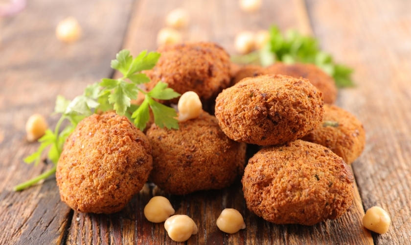

Tamia

Description
Sudanese version of deep fried falafel made from chickpeas, herbs and spices.
Ingredients
- 500g chickpeas
- 4 cloves garlic
- 2 onions
- 2 tbsp flour
- 1 egg
- 1/2 cup fresh coriander
- 1 white bread roll
- 1 teaspoon salt
- 1 teaspoon pepper
- 1 teaspoon coriander seed
- 1 teaspoon baking powder
- 1 teaspoon sesame seeds
- oil (for frying)
Steps
- Soak chickpeas in water for at least 3 hours.
- Take a skillet and cook chickpeas with minced garlic, onion and fresh coriander.
- Now soak broken up bread roll in water. Then break them up finely.
- Add flour to bread and mix.
- Add it into first mixture. Stir in salt, pepper, coriander seeds and set aside for 15 minutes. Add baking powder and mix well.
- Shape the batter into small bowls and sprinkle sesame seeds.
- Take a frying pan and deep fry the balls in oil.